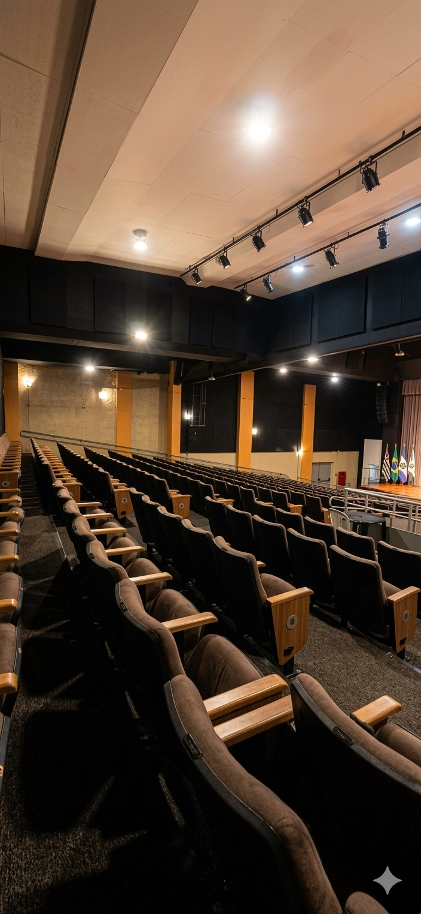
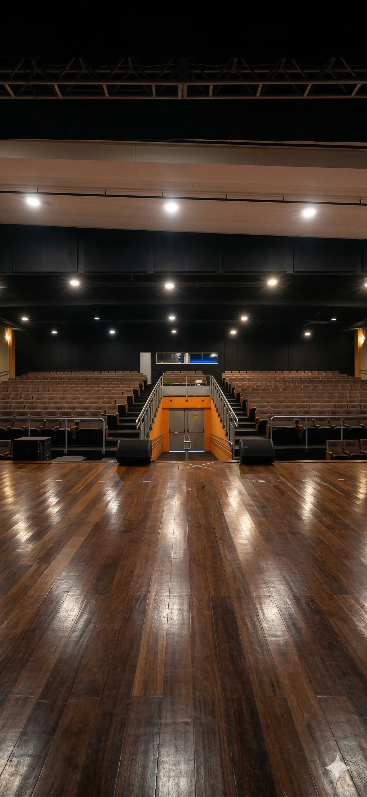
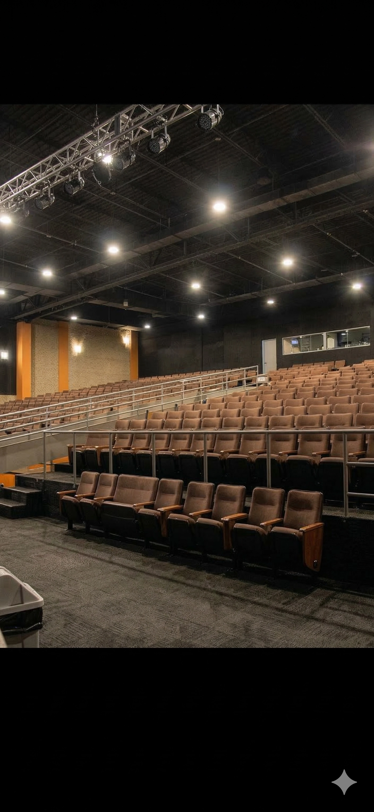

Teatro Eva Wilma
O principal palco da arte, cultura e educação em Itanhaém.



Sobre o Teatro
Localizado no coração da cidade (anexo ao Centro de Capacitação do Professor), o Teatro Eva Wilma é o cenário central das maiores produções culturais de Itanhaém. Recentemente, o espaço passou por reformas estruturais, incluindo melhorias vitais de acessibilidade (como rampas de acesso) e manutenção de refrigeração.
Novo Decreto de Utilização
A nova fase do Teatro é pautada pelo Decreto Nº 4.755/2026. A medida institui o preço público e democratiza o acesso ao equipamento cultural, prevendo isenções para produções locais, projetos sociais e eventos gratuitos, ao passo que estabelece contrapartidas para uso corporativo.
Baixar Decreto e RegulamentoDestaques e Eventos:
-
Festival de Arte da Educação
Palco de apresentações que mudam vidas. O teatro recebe centenas de alunos da rede municipal que provam que a união de teatro e educação transforma a sala de aula e promove o protagonismo jovem.
-
Educação Lúdica e Folclore
Recentemente, cerca de 500 alunos se encantaram com peças infantis como "Boi Viramundo", atestando o Teatro Eva Wilma como uma poderosa ferramenta pedagógica para a transmissão das tradições culturais.
Solicitação de Uso e Contato
Para dúvidas ou informações adicionais, entre em contato através do telefone ou e-mail da Secretaria de Cultura.
A solicitação formal para a utilização do espaço deve ser realizada obrigatoriamente mediante abertura de requerimento no Setor de Protocolo da Prefeitura Municipal.